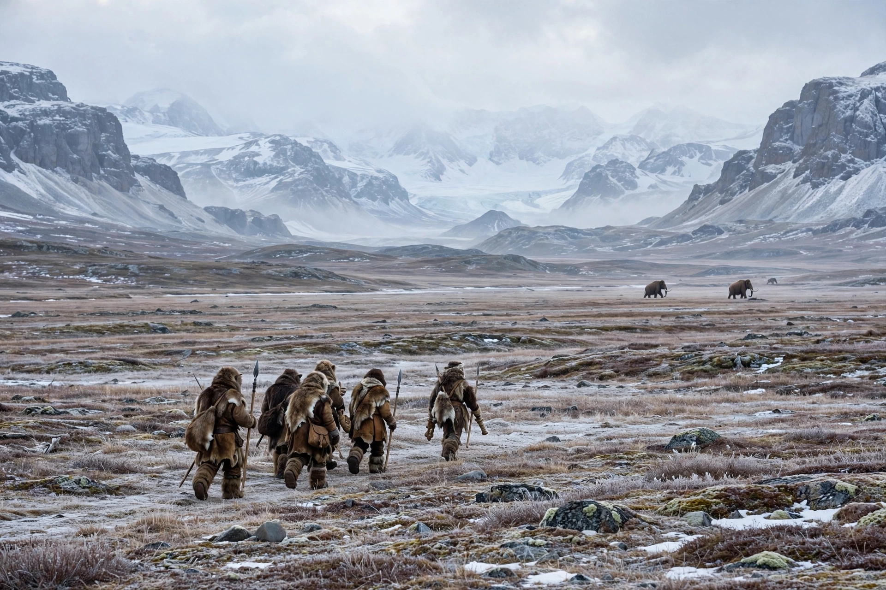

From Wikipedia, the free encyclopedia
| Settlement of the Americas | |
|---|---|
| Origin | Siberia / Northeast Asia |
| Route | Beringia, Pacific coastal route |
| Timing | At least ~16,000–23,000 years ago (debated) |
| Key evidence | Genetics, archaeology, linguistics |
| Major cultures | Clovis, pre-Clovis sites |
The peopling of the Americas concerns when and how humans first entered the American continents. The prevailing scientific model holds that migrants from Siberia crossed Beringia — the land bridge that connected Asia and North America during the Last Glacial Maximum — and then spread southward, either along a Pacific coastal route, through an ice-free corridor between the great North American ice sheets, or both. Genetic studies indicate that the ancestors of Indigenous peoples of the Americas diverged from Siberian populations roughly 25,000–20,000 years ago and were isolated in or near Beringia for several thousand years before expanding.
The coastal migration hypothesis proposes that seafaring or coast-hugging peoples travelled along the Pacific rim, exploiting kelp-forest and marine resources — the so-called "kelp highway". This route could have been open several thousand years before the interior ice-free corridor became viable, and it helps explain early sites far to the south.
For much of the 20th century the standard account had big-game hunters crossing Beringia and passing between the Laurentide and Cordilleran ice sheets once the corridor opened, around 13,800 years ago, giving rise to the Clovis culture. Securely dated pre-Clovis sites have since overturned the "Clovis first" model.
Monte Verde in Chile, dated to about 14,500 years ago, was the first widely accepted pre-Clovis site. Other early sites include Page-Ladson and Paisley Caves in North America, and the Cooper's Ferry site in Idaho (~16,000 years). Footprints at White Sands National Park in New Mexico have been dated to roughly 21,000–23,000 years ago, which, if correct, places humans in North America during the Last Glacial Maximum itself; the dates remain debated.
Ancient and modern DNA shows that nearly all Indigenous peoples of the Americas descend from a single founding population ("First Peoples") that split into northern and southern branches. Later migrations brought the ancestors of Na-Dene speakers and, much more recently, Inuit and Yupik peoples across the Arctic. A small "Population Y" signal of Australasian-related ancestry in some Amazonian groups remains an intriguing puzzle.
Beringia · Clovis culture · Indigenous peoples of the Americas · Pre-Columbian era
